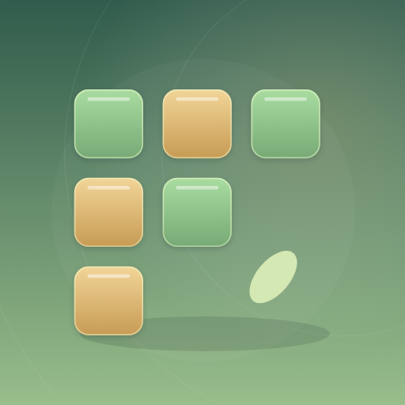

<- all projects

Grove Blocks
PC
Volume
Live
Fit shapes on an 8 x 8 board, clear rows and columns, and grow a quiet woodland.
Grove Blocks is a relaxing block puzzle about making room for your next move. Fit three shapes at a time onto an 8 x 8 board, complete rows and columns and chain clears into combos. Classic mode never has a timer, and every set of three shapes has a possible placement order. Relic trails give you starting boards with hidden relics and a move limit, and the daily clearing offers one seeded board with a 450-point goal. Every run includes rotates and undos, five cleared lines earn another rotate, and leaves from finished runs grow four garden areas.